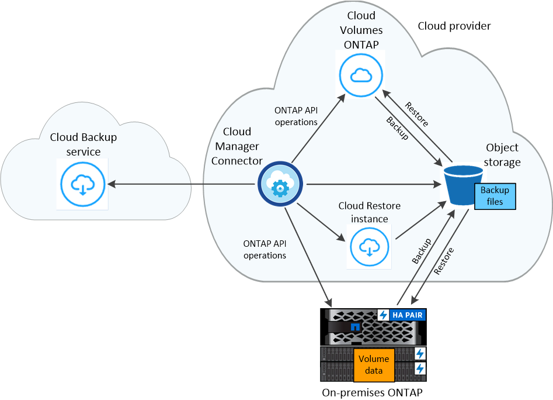

Learn about Cloud Backup
Contributors
Cloud Backup is a service for Cloud Manager working environments that provides backup and restore capabilities for protection and long-term archive of your data. Backups are automatically generated and stored in an object store in your public or private cloud account, independent of volume Snapshot copies used for near-term recovery or cloning.
When necessary, you can restore an entire volume, or one or more files, from a backup to the same or different working environment.
Features
Backup features:
-
Back up independent copies of your data volumes to low-cost object storage.
-
Apply a single backup policy to all volumes in a cluster, or assign different backup policies to volumes that have unique recovery point objectives.
-
Tier older backup files to archival storage to save costs (supported with AWS and Azure when using ONTAP 9.10.1+)
-
Back up from cloud to cloud, and from on-premises systems to public or private cloud.
-
For Cloud Volumes ONTAP systems, your backups can reside on a different subscription/account or different region.
-
Backup data is secured with AES-256 bit encryption at-rest and TLS 1.2 HTTPS connections in-flight.
-
Use your own customer-managed keys for data encryption instead of using the default encryption keys from your cloud provider.
-
Support for up to 4,000 backups of a single volume.
Restore features:
-
Restore data from a specific point in time.
-
Restore a volume, or individual files, to the source system or to a different system.
-
Restore data to a working environment using a different subscription/account or that is in a different region.
-
Restores data on a block level, placing the data directly in the location you specify, all while preserving the original ACLs.
-
Browsable file catalog for selecting individual files for single file restore.
Supported working environments and object storage providers
Cloud Backup enables you to back up volumes from the following working environments to object storage in the following public and private cloud providers:
| Source Working Environment | Backup File Destination |
|---|---|
Cloud Volumes ONTAP in AWS |
Amazon S3 |
Cloud Volumes ONTAP in Azure |
Azure Blob |
Cloud Volumes ONTAP in Google |
Google Cloud Storage |
On-premises ONTAP system |
Amazon S3 |
Kubernetes cluster in AWS |
Amazon S3 |
Kubernetes cluster in Azure |
Azure Blob |
Kubernetes cluster in Google |
Google Cloud Storage |
You can restore a volume, or individual files, from a backup file to the following working environments:
| Backup File | Destination Working Environment | ||
|---|---|---|---|
Location |
Type |
Volume Restore |
File Restore |
Amazon S3 |
ONTAP |
Cloud Volumes ONTAP in AWS |
Cloud Volumes ONTAP in AWS |
Amazon S3 |
Kubernetes |
Kubernetes cluster in AWS |
|
Azure Blob |
ONTAP |
Cloud Volumes ONTAP in Azure |
Cloud Volumes ONTAP in Azure |
Azure Blob |
Kubernetes |
Kubernetes cluster in Azure |
|
Google Cloud Storage |
ONTAP |
Cloud Volumes ONTAP in Google |
|
Google Cloud Storage |
Kubernetes |
Kubernetes cluster in Google |
|
NetApp StorageGRID |
ONTAP |
On-premises ONTAP system |
|
Cost
There are two types of costs associated with using Cloud Backup: resource charges and service charges.
Resource charges
Resource charges are paid to the cloud provider for object storage capacity and for running a virtual machine/instance in the cloud.
-
For Backup, you pay your cloud provider for object storage costs.
Since Cloud Backup preserves the storage efficiencies of the source volume, you pay the cloud provider object storage costs for the data after ONTAP efficiencies (for the smaller amount of data after deduplication and compression have been applied).
-
For File Restore, you pay your cloud provider for compute costs only when the Restore instance is running.
The instance resides in the same subnet as the Connector, and it runs only when browsing a backup file to locate the individual files you want to restore. The instance is turned off when not in use to save costs.
-
In AWS, the Restore instance runs on an m5n.xlarge instance with 4 CPUs, 16 GiB memory, and EBS Only instance storage. The operating system image is Amazon Linux 2.
In regions where m5n.xlarge instance isn’t available, Restore runs on an m5.xlarge instance instead.
-
In Azure, the Restore virtual machine runs on a Standard_D4s_v3 VM with 4 CPUs, 16 GiB memory, and a 32 GiB disk. The operating system image is CentOS 7.5).
The instance is named Cloud-Restore-Instance with your Account ID concatenated to it. For example: Cloud-Restore-Instance-MyAccount.
-
-
For Volume Restore there is no cost because no separate instance or virtual machine is required.
-
If you need to restore volume data from a backup file that has been moved to archival storage (supported with AWS and Azure when using ONTAP 9.10.1+), then there is an additional per-GB retrieval fee and per-request fee from the cloud provider.
Service charges
Service charges are paid to NetApp and cover both the cost to create backups and to restore volumes, or files, from those backups. You pay only for the data that you protect, calculated by the source logical used capacity (before ONTAP efficiencies) of ONTAP volumes which are backed up to object storage. This capacity is also known as Front-End Terabytes (FETB).
There are three ways to pay for the Backup service. The first option is to subscribe from your cloud provider, which enables you to pay per month. The second option is to get an annual contract - this is only available through AWS. The third option is to purchase licenses directly from NetApp. Read the Licensing section for details.
Licensing
Cloud Backup is available in three licensing options: Pay As You Go (PAYGO), an annual contract from the AWS Marketplace, and Bring Your Own License (BYOL). A 30-day free trial is available if you don’t have a license.
Free trial
When using the 30-day free trial, you are notified about the number of free trial days that remain. At the end of your free trial, backups stop being created. You must subscribe to the service or purchase a license to continue using the service.
Backup files are not deleted when the service is disabled. You’ll continue to be charged by your cloud provider for object storage costs for the capacity that your backups use unless you delete the backups.
Pay-as-you-go subscription
Cloud Backup offers consumption-based licensing in a pay-as-you-go model. After subscribing through your cloud provider’s marketplace, you pay per GB for data that’s backed up—there’s no up-front payment. You are billed by your cloud provider through your monthly bill.
You should subscribe even if you have a free trial or if you bring your own license (BYOL):
-
Subscribing ensures that there’s no disruption of service after your free trial ends.
When the trial ends, you’ll be charged hourly according to the amount of data that you back up.
-
If you back up more data than allowed by your BYOL license, then data backup continues through your pay-as-you-go subscription.
For example, if you have a 10 TB BYOL license, all capacity beyond the 10 TB is charged through the PAYGO subscription.
You won’t be charged from your pay-as-you-go subscription during your free trial or if you haven’t exceeded your BYOL license.
Annual contract (AWS only)
Two annual contracts are available from the AWS Marketplace:
-
An annual contract that enables you to back up Cloud Volumes ONTAP data and on-premises ONTAP data.
You’ll also need to pay for your Cloud Volumes ONTAP systems using this annual contract subscription since you can assign only one active subscription to your AWS credentials in Cloud Manager.
-
A Professional Package that enables you to bundle Cloud Volumes ONTAP and Cloud Backup by using an annual contract for 12, 24, or 36 months. This option doesn’t enable you to back up on-prem data.
You can set up the annual contract when you create a Cloud Volumes ONTAP working environment and Cloud Manager will prompt you to subscribe to the AWS Marketplace.
Bring your own license
BYOL is term-based (12, 24, or 36 months) and capacity-based in 1 TB increments. You pay NetApp to use the service for a period of time, say 1 year, and for a maximum amount capacity, say 10 TB.
You’ll receive a serial number that you enter in the Cloud Manager Digital Wallet page to enable the service. When either limit is reached, you’ll need to renew the license. The Backup BYOL license applies to all Cloud Volumes ONTAP and on-premises ONTAP systems associated with your Cloud Manager account.
BYOL license considerations
When using a Cloud Backup BYOL license, Cloud Manager displays a warning in the user interface when the size of all volumes you are backing up is nearing the capacity limit or nearing the license expiration date. You receive these warnings:
-
When backups have reached 80% of licensed capacity, and again when you have reached the limit
-
30 days before a license is due to expire, and again when the license expires
Use the chat icon in the lower right of the Cloud Manager interface to renew your license when you see these warnings.
Two things can happen when your license expires:
-
If the account you are using for your ONTAP systems has a marketplace account, the backup service continues to run, but you are shifted over to a PAYGO licensing model. You are charged for the capacity that your backups are using.
-
If the account you are using for your ONTAP systems does not have a marketplace account, the backup service continues to run, but you will continue to see the warnings.
Once you renew your BYOL subscription, Cloud Manager automatically updates the license. If Cloud Manager can’t access the license file over the secure internet connection (for example, when installed in a dark site), you can obtain the file yourself and manually upload it to Cloud Manager. For instructions, see how to update a Cloud Backup license.
Systems that were shifted over to a PAYGO license are returned to the BYOL license automatically. And systems that were running without a license will stop seeing the warnings and will be charged for backup activity that occurred while the license was expired.
How Cloud Backup works
When you enable Cloud Backup on a Cloud Volumes ONTAP or on-premises ONTAP system, the service performs a full backup of your data. Volume snapshots are not included in the backup image. After the initial backup, all additional backups are incremental, which means that only changed blocks and new blocks are backed up. This keeps network traffic to a minimum.
In most cases you’ll use the Cloud Manager UI for all backup operations. However, starting with ONTAP 9.9.1 you can initiate volume backup operations of your on-premises ONTAP clusters using ONTAP System Manager. See how to use System Manager to back up your volumes to the cloud using Cloud Backup.

|
Any actions taken directly from your cloud provider environment to manage or change backup files may corrupt the files and will result in an unsupported configuration. |
The following image shows the relationship between each component:

Where backups reside
Backup copies are stored in an object store that Cloud Manager creates in your cloud account. There’s one object store per cluster/working environment, and Cloud Manager names the object store as follows: "netapp-backup-clusteruuid". Be sure not to delete this object store.
-
In AWS, Cloud Manager enables the Amazon S3 Block Public Access feature on the S3 bucket.
-
In Azure, Cloud Manager uses a new or existing resource group with a storage account for the Blob container. Cloud Manager blocks public access to your blob data by default.
-
In GCP, Cloud Manager uses a new or existing project with a storage account for the Google Cloud Storage bucket.
-
In StorageGRID, Cloud Manager uses an existing storage account for the object store bucket.
If you want to change the destination object store for a cluster in the future, you’ll need to unregister Cloud Backup for the working environment, and then enable Cloud Backup using the new cloud provider information.
Supported storage classes or access tiers
-
In AWS, backups start in the Standard storage class and transition to the Standard-Infrequent Access storage class after 30 days.
If your cluster is using ONTAP 9.10.1 or greater, you can choose to tier older backups to either S3 Glacier or S3 Glacier Deep Archive storage after a certain number of days for further cost optimization. Learn more about AWS archival storage.
-
In Azure, backups are associated with the Cool access tier.
If your cluster is using ONTAP 9.10.1 or greater, you can choose to tier older backups to Azure Archive storage after a certain number of days for further cost optimization. Learn more about Azure archival storage.
-
In GCP, backups are associated with the Standard storage class by default.
You can also use the lower cost Nearline storage class, or the Coldline or Archive storage classes. See the Google topic Storage classes for information about changing the storage class.
-
In StorageGRID, backups are associated with the Standard storage class.
Customizable backup schedule and retention settings per cluster
When you enable Cloud Backup for a working environment, all the volumes you initially select are backed up using the default backup policy that you define. If you want to assign different backup policies to certain volumes that have different recovery point objectives (RPO), you can create additional policies for that cluster and assign those policies to other volumes.
You can choose a combination of hourly, daily, weekly, and monthly backups of all volumes. You can also select one of the system-defined policies that provide backups and retention for 3 months, 1 year, and 7 years. These policies are:
| Backup Policy Name | Backups per interval… | Max. Backups | ||
|---|---|---|---|---|
Daily |
Weekly |
Monthly |
||
Netapp3MonthsRetention |
30 |
13 |
3 |
46 |
Netapp1YearRetention |
30 |
13 |
12 |
55 |
Netapp7YearsRetention |
30 |
53 |
84 |
167 |
Backup protection policies that you have created on the cluster using ONTAP System Manager or the ONTAP CLI will also appear as selections.
Once you have reached the maximum number of backups for a category, or interval, older backups are removed so you always have the most current backups.
Note that you can create an on-demand backup of a volume from the Backup Dashboard at any time, in addition to those backup files created from the scheduled backups.

|
The retention period for backups of data protection volumes is the same as defined in the source SnapMirror relationship. You can change this if you want by using the API. |
Backups are taken at midnight
-
Hourly backups start 5 minutes past the hour, every hour.
-
Daily backups start just after midnight each day.
-
Weekly backups start just after midnight on Sunday mornings.
-
Monthly backups start just after midnight on the first day of each month.
The start time is based on the time zone set on each source ONTAP system. You can’t schedule backup operations at a user-specified time from the UI. For more information, contact your System Engineer.
Backup copies are associated with your NetApp account
Backup copies are associated with the NetApp account in which the Connector resides.
If you have multiple Connectors in the same NetApp account, each Connector will display the same list of backups. That includes the backups associated with Cloud Volumes ONTAP and on-premises ONTAP instances from other Connectors.
FabricPool tiering policy considerations
There are certain things you need to be aware of when the volume you are backing up resides on a FabricPool aggregate and it has an assigned policy other than none:
-
The first backup of a FabricPool-tiered volume requires reading all local and all tiered data (from the object store). A backup operation does not "reheat" the cold data tiered in object storage.
This operation could cause a one-time increase in cost to read the data from your cloud provider.
-
Subsequent backups are incremental and do not have this effect.
-
If the tiering policy is assigned to the volume when it is initially created you will not see this issue.
-
-
Consider the impact of backups before assigning the
alltiering policy to volumes. Because data is tiered immediately, Cloud Backup will read data from the cloud tier rather than from the local tier. Because concurrent backup operations share the network link to the cloud object store, performance degradation might occur if network resources become saturated. In this case, you may want to proactively configure multiple network interfaces (LIFs) to decrease this type of network saturation.
Supported volumes
Cloud Backup supports FlexVol read-write volumes and SnapMirror data protection (DP) destination volumes.
FlexGroup volumes and SnapLock volumes aren’t currently supported.
Limitations
-
The ability to tier older backup files to archival storage requires that the cluster is running ONTAP 9.10.1 or greater (supported currently with AWS and Azure). Restoring volumes from backup files that reside in archival storage also requires that the destination cluster is running ONTAP 9.10.1+.
-
When creating or editing a backup policy when no volumes are assigned to the policy, the number of retained backups can be a maximum of 1018. As a workaround you can reduce the number of backups to create the policy. Then you can edit the policy to create up to 4000 backups after you assign volumes to the policy.
-
When backing up data protection (DP) volumes, relationships with the following SnapMirror labels won’t be backed up to cloud:
-
app_consistent
-
all_source_snapshot
-
-
SVM-DR volume backup is supported with the following restrictions:
-
Backups are supported from the ONTAP secondary only.
-
The Snapshot policy applied to the volume must be one of the policies recognized by Cloud Backup, including daily, weekly, monthly, etc. The default "sm_created" policy (used for Mirror All Snapshots) is not recognized and the DP volume will not be shown in the list of volumes that can be backed up.
-
-
Ad-hoc volume backups using the Backup Now button aren’t supported on data protection volumes.
-
SM-BC configurations are not supported.
-
MetroCluster (MCC) backup is supported from ONTAP secondary only: MCC > SnapMirror > ONTAP > Cloud Backup > object storage.
-
ONTAP doesn’t support fan-out of SnapMirror relationships from a single volume to multiple object stores; therefore, this configuration is not supported by Cloud Backup.
-
WORM/Compliance mode on an object store is not supported.
Single File Restore limitations
-
Single file restore can restore up to 100 individual files at a time. There is currently no support for restoring folders/directories.
-
The file being restored must be using the same language as the language on the destination volume. You will receive an error message if the languages are not the same.
-
File level restore is not supported when using the same account with different Cloud Managers in different subnets.
 Request doc changes
Request doc changes Edit this page
Edit this page Learn how to contribute
Learn how to contribute